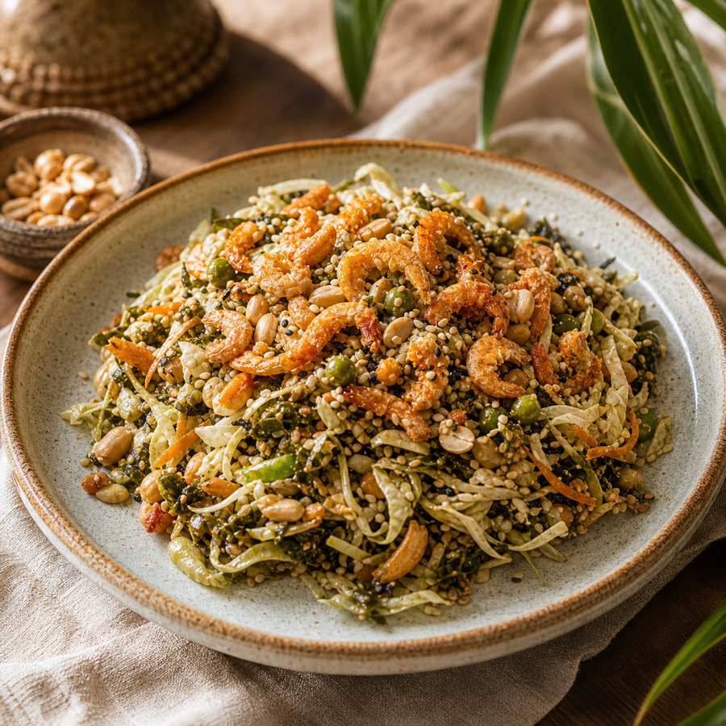
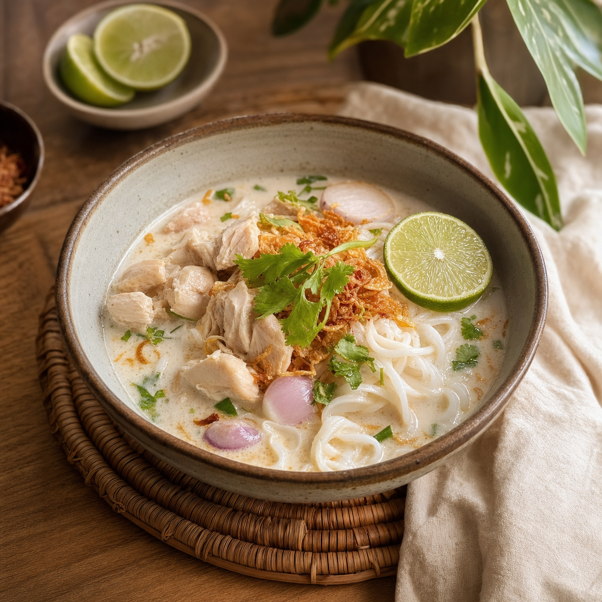
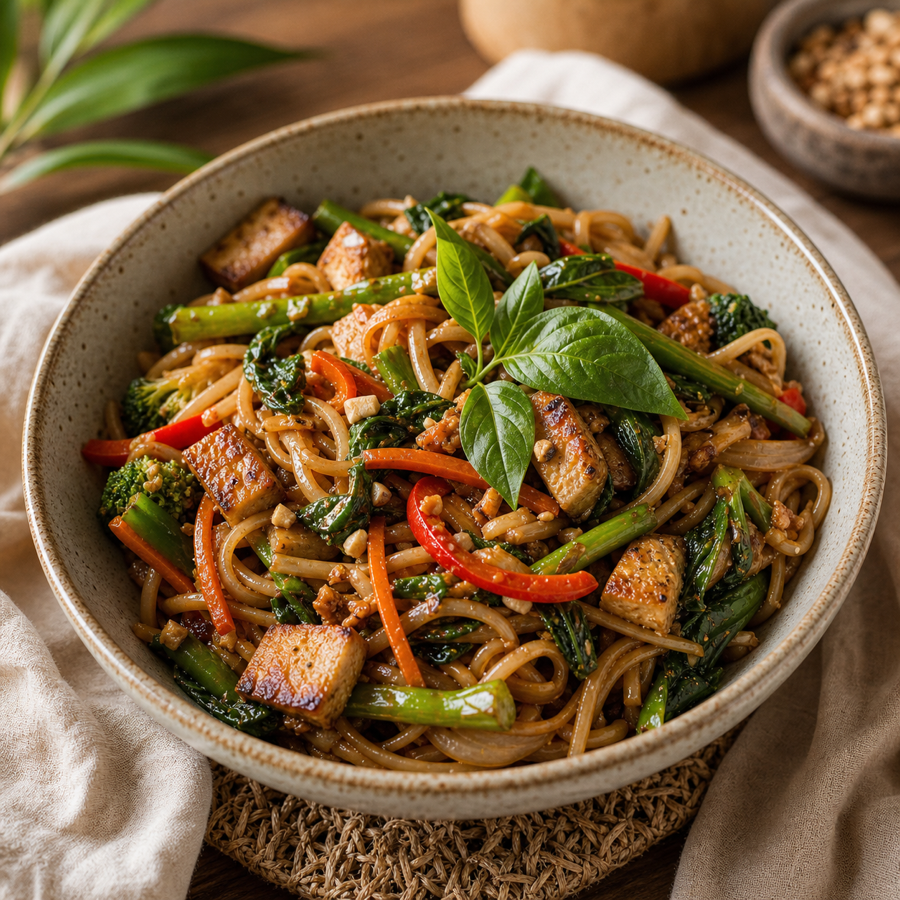
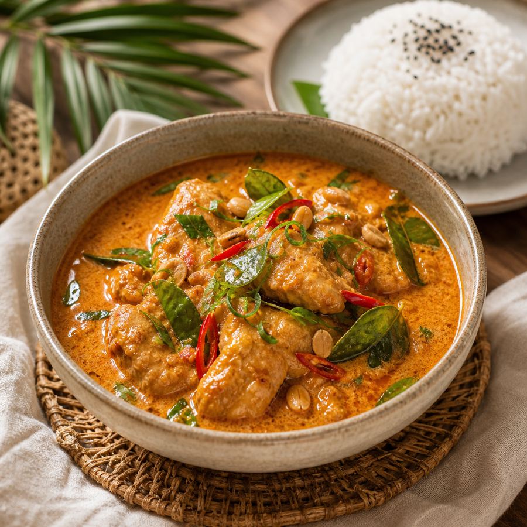
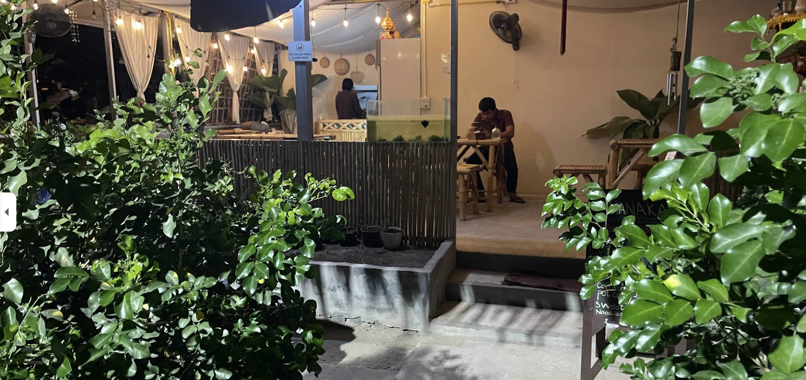
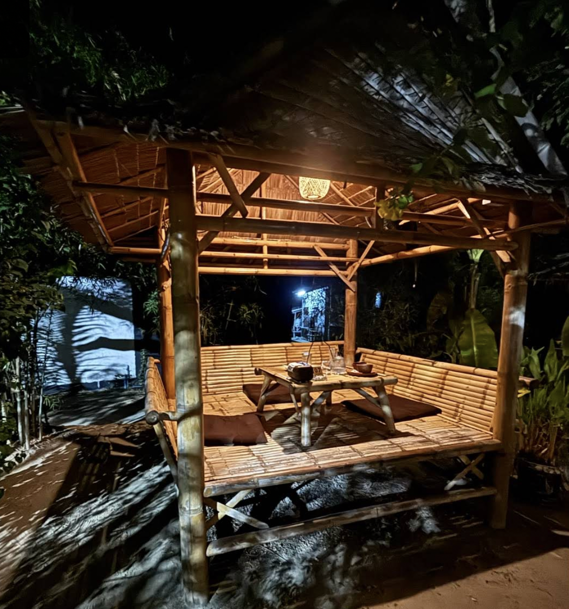

Rakhine Moke Ti
170Rakhine style fish and pepper soup.
Traditional Burmese family kitchen · Koh Phangan
Authentic Burmese salads, soups, clay pot curries, wok-fried rice and noodles, and family sharing plates inspired by generations of home cooking.
Best selling food




Myanmar culture
Thanaka Restaurant's look now takes inspiration from Myanmar's warm landscapes, lacquer red, teak wood, thanaka cream, and family-style Burmese dining.
Burmese Harmony Plates are available for one or two people, with vegetarian/no meat and meat options prepared around the day's family selection.
Atmosphere

Greenery, soft evening light, and a tucked-away feeling that matches the hidden-gem reviews.
Natural bamboo, low tables, and a relaxed setting for sharing curries, salads, rice, and soup.
A calm place where the family can explain the menu and help with dietary needs.

Guest Reviews
The food was really delicious — I especially enjoyed the chicken rice. The café owners were incredibly friendly and welcoming. They even treated me to tea and water, which was such a kind gesture. Highly recommend this place!
A lovely garden oasis with delicious food from Myanmar and great drinks. Staff is very sweet and welcoming. Good prices and large portions.
This is a hidden gem. The place is unpretentious. Found it last minute while looking for vegan food options in Koh Phangan. We arrived after 10 pm, but the owners were happy to receive us and make food for us. And the food...delicious! We had the fermented tea leaf salad, Gotu Kola salad, and sweet potato noodles. The flavours were well balanced, salads packed with nutritional foods, and portions good. Run by a beautiful family from Myanmar. Humble and very kind. One of the best restaurants I have been to while traveling.
Visit